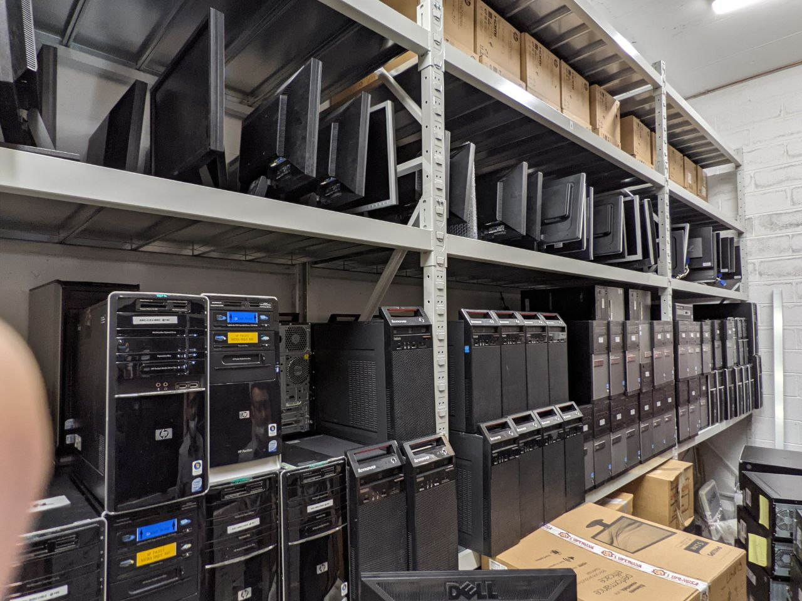
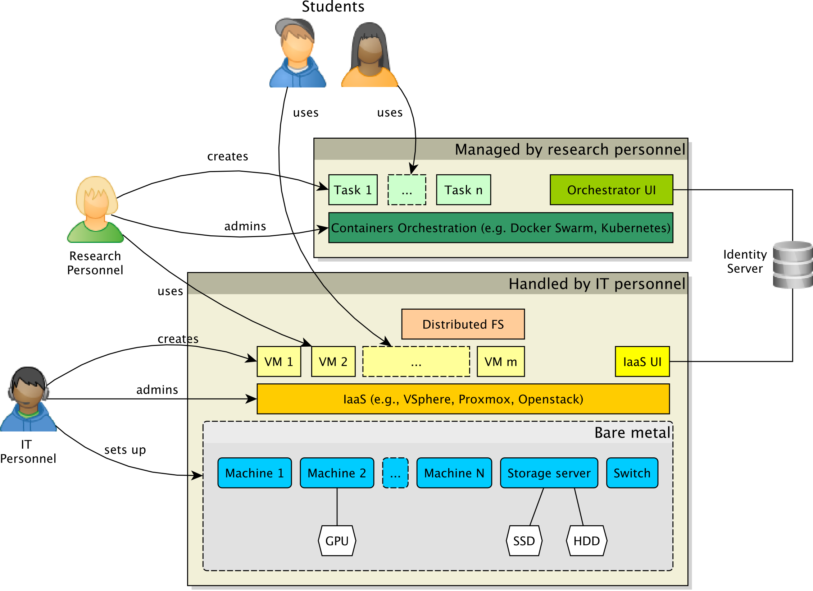

Amatorial Container-as-a-Service for Lazy Busy Scholars
Giovanni Ciatto
(material from https://doi.org/10.1109/ACSOS-C58168.2023.00052)
About me (pt. 1)
Overview
About me (pt. 2)
Relevant academic activities
-
Technical coordinator and WP leader in the Horizon EU project AEQUITAS (G.A. 101070363)
- AEQUITAS $\equiv$ *Assessment and Engineering of Equitable, Unbiased, Impartial and Trustworthy AI Systems
-
WP leader in the CHIST-ERA IV project EXPECTATION
- EXPECTATION $\equiv$ Personalized Explainable Artificial Intelligence for decentralized agents with heterogeneous knowledge
-
Teacher in several master courses concerning software engineering, artificial intelligence, and distributed systems
About me (pt. 3)
Research interests
-
Multi-Agent Systems and Agent-Oriented Programming
- cf. Martina’s presentation
- recent relevant papers: doi:10.1007/s10458-020-09478-3, doi:10.1007/978-3-031-43264-4_4
-
Distributed Systems
- cf. this presentation
- recent relevant papers: doi:10.1109/ACSOS-C58168.2023.00052, doi:10.1109/ICCCN.2019.8846916
-
Artificial Intelligence and Machine Learning
- cf. the AEQUITAS project
- recent relevant papers: doi:10.1145/3645103, abs/2404.04108
-
eXplainable AI (XAI)
- cf. the EXPECTATION project
- recent relevant papers: doi:10.1016/j.cmpb.2023.107536, doi:10.1007/978-3-031-40878-6_3
-
Logic Programming
- recent relevant papers: doi:10.1017/S1471068422000102, doi:10.1016/j.softx.2021.100817
Problem statement
What hardware resources are available for researchers in our university campus?
Provisioned via competitive projects, in different moments
-
1 x NVIDIA Tesla GPU, 15 x Ascend Atlas NPU
- Intel(R) Xeon(R) CPU @ 2.90GHz (64–96 cores, 200–800 GB RAM)
-
2 x storage servers (4–8 TB each, with RAID)
-
several switches and routers

Provisioned by the campus / department, via ordinary funding
- 8th gen Intel Core i5, 8/16GB RAM, 1TB storage

Multiple sources of inefficiency
- Hardware cannot be used for scopes other than those for which it was funded
- Sounds reasonable, until you discover hundreds of unused systems left in a warehouse
- Bought for teaching, already replaced with more capable machinery
- Sounds reasonable, until you discover hundreds of unused systems left in a warehouse
- Groups owning hardware resources hardly share
- Several compute servers dramatically underutilized
- Not for lack of will!
- How do I control access to my hardware?
- How expensive (in time and money) is it to share?
- No standardized procedure to do so nimbly!
- Big hardware is bought via extra-ordinary funding
- Heterogeneous hardware resources, joining/leaving at any time
- IT personnel trained on maintenance, not really caring about applications
- Hundreds of decent lab PCs dramatically underutilized
- Most get turned on in the morning and never shut down
- Most are idle most of the time
- They get turned off when the campus closes, but they could potentially still be useful…
The real issue with systems like this one (arguably, small scale) is
RESOURCE COMPARTMENTALIZATION
- Systems are compartmentalized by ownership
- Different research groups
- Campus vs. department
- Systems are compartmentalized by scope
- Teaching vs. research
- Systems are compartmentalized by type
- Rack vs. desktop
- Operating system ( vs. vs. )
Tear down the wall:
small-scale edge-cloud continuum
(just a fancy name for a small-scale Container-as-a-Service cluster)
Desiderata
- Runtime addition and removal of hardware resources
- Heterogeneous hardware resources
- (Relative) ease of use: people with no system-level knowledge should be able to use it
- Capability to host long-lived services and execute short-lived jobs
- Integration with the existing authentication and authorization infrastructure
Problem model
Roles
student, researcher, IT Personnel
- They differ by the kinds of resources that should be able to access
- Different contexts may require different roles, but the right management should be similar
(unless the scale grows signficantly)
Workloads
jobs (short-lived), services (long-lived)
Capabilities and constraints
workloads must be able to constrain their execution to nodes with specific capabilities, e.g.:
GPU or FPGA (hardware), specific OS, specific runtime (e.g., the JVM, or the CLR)
Isolation
Different workloads $\to$ different constraints $\to$ isolation at multiple levels
access control
RBAC backed by a pre-existing central authority
Architecture

Process
- IaaS infrastructure selection
- Consider ease of configuration
- Compute the cost
- If needed, verify that the hardware passthrough is actually viable
- Pick an administration UI
- Container orchestrator selection
- Verify the installation and configuration effort
- Evaluate the handyness of task description languages
- If needed, verify that node-tagging mechanisms are in place to support peculiar hardware
- Find a UI for the orchestrator
- Shared Storage configuration
- Access control
Application
The Alma Mater Research Institute for Human Centered Artificial Intelligence
Just AlmaAI for friends
Context
- Multiple projects and research groups can
- Hardware can be joined in or reserved for other uses at any time
Hardware
- Several compute servers (heavy-load CPU and a lot of memory)
- Several GPU-equipped servers (NVIDIA Tesla A100)
- 2 “inference servers” with custom NPU (Atlas 800-model 3010)
Constraints
- The authentication infrastructure must use the current UniBo Active Directory
- Re-training of the current IT personnel to be avoided
- Replacement of personnel that would need re-train is not an option either
- One-command join and leave of hardware resources
1. IaaS infrastructure selection
| Bare Metal | VMWare VSphere | OpenStack | |
|---|---|---|---|
| configuration | low flexibility | Non portable across hardware/OSs | |
| license cost | we had licenses | ||
| training cost | IT personnel pre-trained | ||
| passthrough | NPU not working | NPU not working | |
| admin UI |
Decision: Bare Metal for servers with NPU, VMWare Sphere otherwise
Driving factors
- Licenses already available due to a previous agreement with VMWare, pre-trained IT personnel
- Need for a standard installation procedure
- NPU support (favoring bare metal for inference servers)
Risk analysis
- Vendor lock-in with VMWare.
- Changes in the licensing model of VMWare Sphere may make the VMM not viable.
2. Container orchestrator selection
| Kubernetes | Docker Swarm | |
|---|---|---|
| setup |
kubeadm, kubelet, kubectl, kube-proxy |
|
| language | YAML | YAML |
| tagging | ||
| admin UI | Third party | Third party |
Decision: Docker Swarm
Driving factors
- Easier to setup
- One-command join to the swarm
Risk analysis
- Less flexible than Kubernetes, could be an issue if the scale grows
2 bis. Container orchestrator admin UI
| Swarmpit | Kubernetes Dashboard | Portainer | |
|---|---|---|---|
| license cost | Freemium | ||
| support for Kubernetes | |||
| support for Docker Swarm | |||
| LDAP authentication | Feature requested | Needs to bind Kubernetes to LDAP |
Decision: Portainer
Driving factors
- LDAP working out of the box with the free version
- Supports both Kubernetes and Docker Swarm, in case a switch will be needed in the future
Risk analysis
- Changes in the free feature set may make the free version not viable
3. Shared storage
Federation
Unification of multiple storage resources
- distributed file system
- GlusterFS, HadoopFS, CEPH
Distribution
Access remote file systems as if they were local
- remote file system
- NFS, Samba, CIFS, iSCSI
Driving factors
- Storage servers’ resources must be distributed (NFS)
- Smaller storage resources must get unified (GlusterFS)
Risk analysis
- Disruption in a single node may make data (temporarily) disappear
- Mitigation: sharding or replication, at the price of worse latency
- Container volumes may expose the underlying file system, breaking isolation (Docker Swarm only)
- Mitigation: a dedicated plugin for Docker is being built
- Poor backup support (both Docker Swarm and Kubernetes)
- Mitigation: a dedicated plugin for Docker is being built
4. Access Control
Authentication mechanisms already in place
-
Common situation
-
Available protocols: LDAP, Active Directory, Shibboleth, OAuth
Decision: Small-scale ECC hid behind a VPN + LDAP
Driving factors
- It is the only protocol supported by Portainer in the free version
Risk analysis
- VPN-ification may not be viable in some contexts
Conclusion
- The ECC paradigm is viable even at a small scale
- ECC in the small can help with underutilized hardware resources
- Technical challenges are mixed with organizational ones
- Factors to take into account include hidden costs
- Adopting a FOSS solution may be ideal, but the IT personnel must be trained
- Also people may be reluctant to adopt something they don’t know
- Proprietary solutions are at a risk of vendor lock-in
- Adopting a FOSS solution may be ideal, but the IT personnel must be trained
In this work
- A possibile architecture for a small-scale ECC
- An actionable decision taking process to build it
- An example of the infrastructure being built
Future work
- Docker plugins for backup and file system isolation
- Incorporation of wake-on-lan for on-demand usage of unused lab desktops
and, by the way, the ACSOS 2023 Telegram bot is actually running on the infrastructure we just described